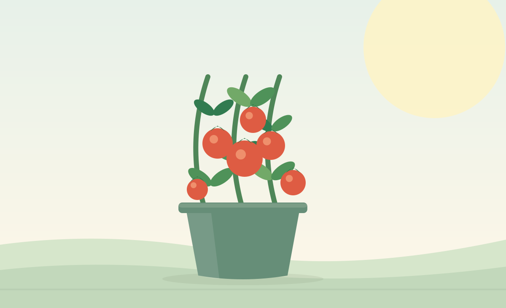

Green Balcony growing guide
Vegetables you can grow in pots
You do not need a full backyard to grow a useful harvest. Choose compact varieties and containers that support healthy roots.

Popular container vegetables
These are practical starting points, not rigid rules. Variety, climate and container depth change what works best.
| Vegetable | Light | Suggested pot | Growing note |
|---|---|---|---|
| Cherry tomato | Full sun | 5+ gallons | Provide a cage or sturdy stake. |
| Pepper | Full sun | 3–5 gallons | Warm weather supports growth. |
| Leaf lettuce | Partial to full sun | 8 in. deep | Pick outer leaves regularly. |
| Radish | Sun to partial shade | 6–8 in. deep | Direct-sow and thin seedlings. |
| Bush green beans | Full sun | 2+ gallons | Choose compact bush varieties. |
| Cucumber | Full sun | 5+ gallons | Choose a compact type and add a trellis. |
Four steps to a healthier harvest
- Place fruiting crops in a spot with at least six hours of direct sunlight when possible.
- Use a sufficiently large container with drainage openings.
- Water the entire root area when needed and let excess water drain.
- Feed according to the product label and support plants that produce heavy fruit.
Common problems
- Yellow leaves and wet soil: check drainage and avoid watering on an automatic schedule.
- Weak stems: evaluate light levels and add supports where needed.
- Few tomatoes or peppers: check warmth, sunlight, watering and plant variety.